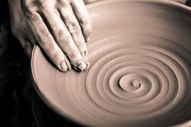

Classes
At Seize The Clay, we offer two types of classes: beginner and intermediate. Beginner class assumes you know nothing about pottery. We start with the basics and teach you a bit of pottery history. Intermediate class should be taken after beginner class for those who want to learn advanced skills or those who already know such skills. In both classes, we learn different techniques for making various forms, such as a mug and a vase. We also learn about firing and glazing techniques.
Beginner
In beginner class, we learn:
- How to wedge & throw clay
- Centering clay
-
Basic forms: plates, mugs,
pots and bowls. - Basic Glazing techniques
Intermediate
In intermediate class, we learn:
- Advanced forms
- Working with different clay types
-
Advanced glazing techniques
and color mixing - Clay carving, adding accessories
Beginner Class Pricing and Schedule
Our beginner classes are offered on:
- MONDAYS from 5-7:30 PM
- THURSDAYS from 6-8:30 PM
- SATURDAYS from 2-4:30 PM
Intermediate Class Pricing and Schedule
Our intermediate classes are offered on:
- TUESDAYS from 5-7:30 PM
- FRIDAYS from 6-8:30 PM
- SATURDAYS from 11-1:30 PM
About Our Studio
Hours and Pricing
Our studio is meant for you! After taking our classes, or if you already know what you’re doing, you can sign up and rent a pottery wheel and walk in whenever you have free time. Your imagination is the limit! For a monthly fee of $120, you have access to a pottery wheel and the glaze room as long as we are open. We will fire your pieces for you in the kiln.
The studio is open from 10 AM-9 PM every day, closed Wednesdays and Sundays, as well as national holidays. (Emails will be sent out weeks in advance as a reminder of holiday closings.)
Now that you know more about our pricing and schedule, click the button below to contact us, and we’ll get you scheduled.
Contact Us